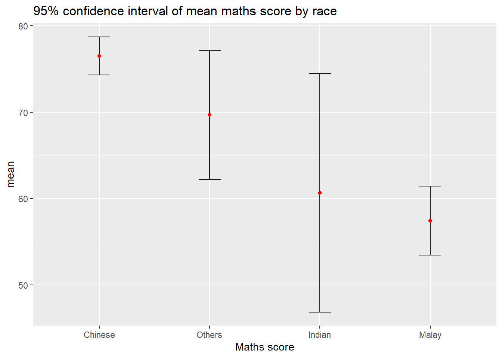

Code
pacman::p_load(plotly, crosstalk, DT,
ggdist, ggridges, colorspace,
gganimate, tidyverse)Visualising uncertainty is relatively new in statistical graphics. In this chapter, you will gain hands-on experience on creating statistical graphics for visualising uncertainty. By the end of this chapter you will be able:
to plot statistics error bars by using ggplot2,
to plot interactive error bars by combining ggplot2, plotly and DT,
to create advanced by using ggdist, and
to create hypothetical outcome plots (HOPs) by using ungeviz package.
For the purpose of this exercise, the following R packages will be used, they are:
tidyverse, a family of R packages for data science process,
plotly for creating interactive plot,
gganimate for creating animation plot,
DT for displaying interactive html table,
crosstalk for for implementing cross-widget interactions (currently, linked brushing and filtering), and
ggdist for visualising distribution and uncertainty.
pacman::p_load(plotly, crosstalk, DT,
ggdist, ggridges, colorspace,
gganimate, tidyverse)For the purpose of this exercise, Exam_data.csv will be used.
exam <- read_csv("Exam_data.csv")A point estimate is a single number, such as a mean. Uncertainty, on the other hand, is expressed as standard error, confidence interval, or credible interval. Don’t confuse the uncertainty of a point estimate with the variation in the sample
In this section, you will learn how to plot error bars of maths scores by race by using data provided in exam tibble data frame.
Firstly, code chunk below will be used to derive the necessary summary statistics.
my_sum <- exam %>%
group_by(RACE) %>%
summarise(
n=n(),
mean=mean(MATHS),
sd=sd(MATHS)
) %>%
mutate(se=sd/sqrt(n-1))group_by() of dplyr package is used to group the observation by RACE, summarise() is used to compute the count of observations, mean, standard deviation mutate() is used to derive standard error of Maths by RACE, and the output is save as a tibble data table called my_sum. Note For the mathematical explanation, please refer to Slide 20 of Lesson 4.
Next, the code chunk below will be used to display my_sum tibble data frame in an html table format.
knitr::kable(head(my_sum), format = 'html')| RACE | n | mean | sd | se |
|---|---|---|---|---|
| Chinese | 193 | 76.50777 | 15.69040 | 1.132357 |
| Indian | 12 | 60.66667 | 23.35237 | 7.041005 |
| Malay | 108 | 57.44444 | 21.13478 | 2.043177 |
| Others | 9 | 69.66667 | 10.72381 | 3.791438 |
Now we are ready to plot the standard error bars of mean maths score by race as shown below.
ggplot(my_sum) +
geom_errorbar(
aes(x=RACE,
ymin=mean-se,
ymax=mean+se),
width=0.2,
colour="black",
alpha=0.9,
linewidth=0.5) +
geom_point(aes
(x=RACE,
y=mean),
stat="identity",
color="red",
size = 1.5,
alpha=1) +
ggtitle("Standard error of mean maths score by rac")
Instead of plotting the standard error bar of point estimates, we can also plot the confidence intervals of mean maths score by race.
ggplot(my_sum) +
geom_errorbar(
aes(x=reorder(RACE, -mean),
ymin=mean-1.96*se,
ymax=mean+1.96*se),
width=0.2,
colour="black",
alpha=0.9,
linewidth=0.5) +
geom_point(aes
(x=RACE,
y=mean),
stat="identity",
color="red",
size = 1.5,
alpha=1) +
labs(x = "Maths score",
title = "95% confidence interval of mean maths score by race")
In this section, you will learn how to plot interactive error bars for the 99% confidence interval of mean maths score by race as shown in the figure below.
shared_df = SharedData$new(my_sum)
bscols(widths = c(4,8),
ggplotly((ggplot(shared_df) +
geom_errorbar(aes(
x=reorder(RACE, -mean),
ymin=mean-2.58*se,
ymax=mean+2.58*se),
width=0.2,
colour="black",
alpha=0.9,
size=0.5) +
geom_point(aes(
x=RACE,
y=mean,
text = paste("Race:", `RACE`,
"<br>N:", `n`,
"<br>Avg. Scores:", round(mean, digits = 2),
"<br>95% CI:[",
round((mean-2.58*se), digits = 2), ",",
round((mean+2.58*se), digits = 2),"]")),
stat="identity",
color="red",
size = 1.5,
alpha=1) +
xlab("Race") +
ylab("Average Scores") +
theme_minimal() +
theme(axis.text.x = element_text(
angle = 45, vjust = 0.5, hjust=1)) +
ggtitle("99% Confidence interval of average /<br>maths scores by race")),
tooltip = "text"),
DT::datatable(shared_df,
rownames = FALSE,
class="compact",
width="100%",
options = list(pageLength = 10,
scrollX=T),
colnames = c("No. of pupils",
"Avg Scores",
"Std Dev",
"Std Error")) %>%
formatRound(columns=c('mean', 'sd', 'se'),
digits=2))ggdist is an R package that provides a flexible set of ggplot2 geoms and stats designed especially for visualising distributions and uncertainty.
It is designed for both frequentist and Bayesian uncertainty visualization, taking the view that uncertainty visualization can be unified through the perspective of distribution visualization:
for frequentist models, one visualises confidence distributions or bootstrap distributions (see vignette(“freq-uncertainty-vis”));
for Bayesian models, one visualises probability distributions (see the tidybayes package, which builds on top of ggdist).
In the code chunk below, stat_pointinterval() of ggdist is used to build a visual for displaying distribution of maths scores by race.
exam %>%
ggplot(aes(x = RACE,
y = MATHS)) +
stat_pointinterval() +
labs(
title = "Visualising confidence intervals of mean math score",
subtitle = "Mean Point + Multiple-interval plot")exam %>%
ggplot(aes(x = RACE, y = MATHS)) +
stat_pointinterval(.width = 0.95,
.point = median,
.interval = qi) +
labs(
title = "Visualising confidence intervals of median math score",
subtitle = "Median Point + Multiple-interval plot")
exam %>%
ggplot(aes(x = RACE,
y = MATHS)) +
stat_pointinterval(
show.legend = FALSE) +
labs(
title = "Visualising confidence intervals of mean math score",
subtitle = "Mean Point + Multiple-interval plot")
In the code chunk below, stat_gradientinterval() of ggdist is used to build a visual for displaying distribution of maths scores by race.
exam %>%
ggplot(aes(x = RACE,
y = MATHS)) +
stat_gradientinterval(
fill = "skyblue",
show.legend = TRUE
) +
labs(
title = "Visualising confidence intervals of mean math score",
subtitle = "Gradient + interval plot")
Note: You only need to perform this step once.
devtools::install_github("wilkelab/ungeviz")strapgod (NA -> ea2b1ecfc...) [GitHub]
cli (3.6.4 -> 3.6.5 ) [CRAN]
utf8 (1.2.4 -> 1.2.5 ) [CRAN]
mvtnorm (NA -> 1.3-3 ) [CRAN]cli (3.6.4 -> 3.6.5) [CRAN]
utf8 (1.2.4 -> 1.2.5) [CRAN]package 'cli' successfully unpacked and MD5 sums checkedpackage 'utf8' successfully unpacked and MD5 sums checked
The downloaded binary packages are in
C:\Users\sandr\AppData\Local\Temp\RtmpYn1NyU\downloaded_packages
── R CMD build ─────────────────────────────────────────────────────────────────* checking for file 'C:\Users\sandr\AppData\Local\Temp\RtmpYn1NyU\remotes2cf44dad52f\DavisVaughan-strapgod-ea2b1ec/DESCRIPTION' ... OK
* preparing 'strapgod':
* checking DESCRIPTION meta-information ... OK
* checking for LF line-endings in source and make files and shell scripts
* checking for empty or unneeded directories
Omitted 'LazyData' from DESCRIPTION
* building 'strapgod_0.0.4.9000.tar.gz'
package 'cli' successfully unpacked and MD5 sums checkedpackage 'utf8' successfully unpacked and MD5 sums checked
package 'mvtnorm' successfully unpacked and MD5 sums checked
The downloaded binary packages are in
C:\Users\sandr\AppData\Local\Temp\RtmpYn1NyU\downloaded_packages── R CMD build ─────────────────────────────────────────────────────────────────* checking for file 'C:\Users\sandr\AppData\Local\Temp\RtmpYn1NyU\remotes2cf43b1e4620\wilkelab-ungeviz-74e1651/DESCRIPTION' ... OK
* preparing 'ungeviz':
* checking DESCRIPTION meta-information ... OK
* checking for LF line-endings in source and make files and shell scripts
* checking for empty or unneeded directories
* building 'ungeviz_0.1.0.tar.gz'
library(ungeviz)Next, the code chunk below will be used to build the HOPs.
ggplot(data = exam,
(aes(x = factor(RACE),
y = MATHS))) +
geom_point(position = position_jitter(
height = 0.3,
width = 0.05),
size = 0.4,
color = "#0072B2",
alpha = 1/2) +
geom_hpline(data = sampler(25,
group = RACE),
height = 0.6,
color = "#D55E00") +
theme_bw() +
transition_states(.draw, 1, 3)